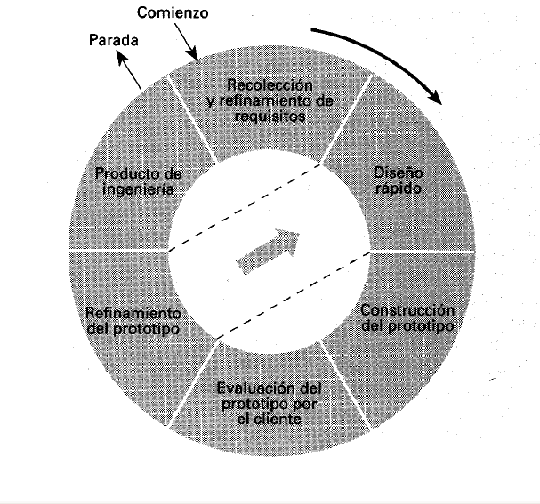
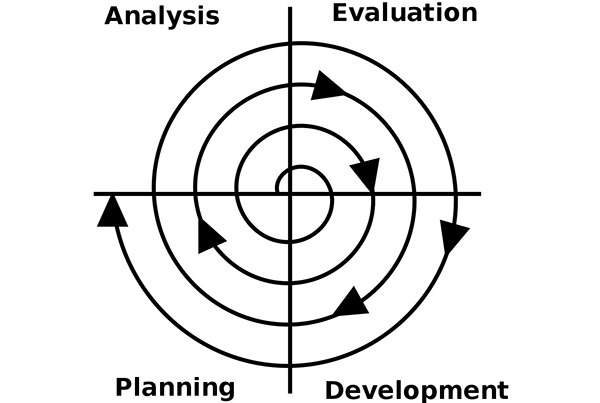
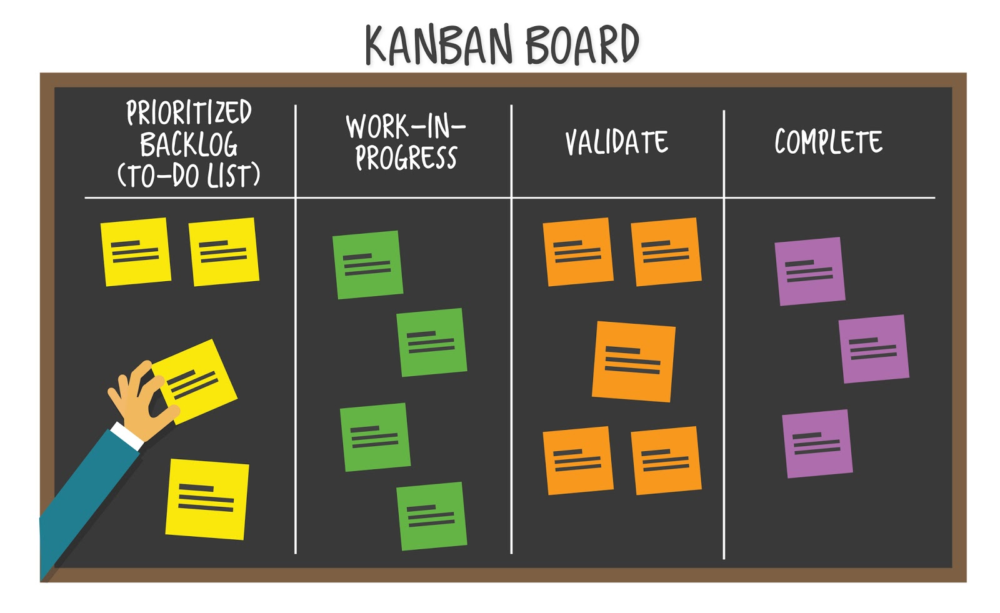
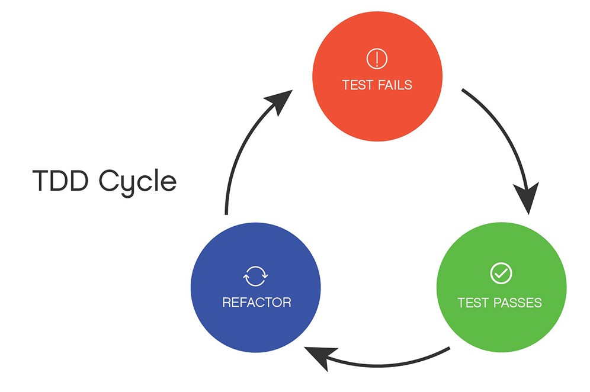

2.3.2 Modelos tradicionales: Cascada,prototipo y espiral.
Modelo cascada

Modelo cascada, desarrolla secuencialmente las etapas del proceso de
desarrollo de software, sin embargo, su carácter poco flexible, obliga a realizar
sucesivas iteraciones del proceso, para poder llegar a una solución satisfactoria.
El desarrollo del modelo se atribuye al teórico de la informática Winston W.
Royce. Sin embargo, Royce no es el inventor de este modelo. Muy al contrario,
en su ensayo de 1970 titulado Managing the Development of Large Software
Systems, el teórico presenta una reflexión crítica acerca de los procedimientos
lineales. A modo de alternativa, Royce presenta un modelo iterativo incremental
en el que cada una de las fases se basa en la anterior y verifica los resultados
de esta.
Modelo prototipo

El paradigma de construcción de prototipos comienza con la recolección de
requisitos. El desarrollador y el cliente encuentran y definen los objetivos
globales para el software, identifican los requisitos conocidos y las áreas del
esquema en donde es obligatoria más definición. Entonces aparece un diseño
rápido. El diseño rápido se centra en una representación de esos aspectos del
software que serán visibles para el usuario/cliente. El diseño rápido lleva a la
construcción de un prototipo. El prototipo lo evalúa el cliente/usuario y se utiliza
para refinar los requisitos del software a desarrollar. La iteración ocurre cuando
el prototipo se pone a punto para satisfacer las necesidades del cliente,
permitiendo al mismo tiempo que el desarrollador comprenda mejor lo que se
necesita hacer.
Modelo espiral

El modelo en espiral es una combinación entre el modelo lineal o de cascada y
el modelo iterativo o basado en prototipos. Se utiliza con éxito en proyectos
donde el coste de un fallo es un gran riesgo, de ahí que su principal aportación
sea considerar la gestión de esos riesgos, algo que en los modelos anteriores ni
siquiera se menciona.
En concreto, los proyectos ejecutados con el modelo en espiral empiezan siendo
pequeños, investigando los mayores riesgos que se pueden tolerar, para pasar
a agrandarse poco a poco, en base a elementos clave sobre los que se
construyen las siguientes fases de la espiral. Habitualmente tiene sentido aplicar
este método en proyectos grandes, largos, caros y complejos.
En cuanto a su ejecución, el modelo en espiral consiste en seguir ciclos
crecientes de cuatro fases cada uno, que se van realizando siguiendo una forma
de espiral.
2.3.3 Modelos ágiles: Scrum, Xp, Kanban, TDD(Test-DrivenDesign)
scrum

Scrum es un proceso en el que se aplican de manera regular un conjunto de buenas prácticas para
trabajar colaborativamente, en equipo, y obtener el mejor resultado posible de un proyecto. Estas prácticas
se apoyan unas a otras y su selección tiene origen en un estudio de la manera de trabajar de equipos altamente
productivos.
En Scrum se realizan entregas parciales y regulares del producto final, priorizadas por
el beneficio que aportan al receptor del proyecto. Por ello, Scrum está especialmente indicado para proyectos
en entornos complejos, donde se necesita obtener resultados pronto, donde los requisitos son cambiantes o poco
definidos, donde la innovación, la competitividad, la flexibilidad y la productividad son fundamentales.
Scrum también
e utiliza para resolver situaciones en que no se está entregando al cliente lo que necesita, cuando las
entregas se alargan demasiado, los costes se disparan o la calidad no es aceptable, cuando se necesita
capacidad de reacción ante la competencia, cuando la moral de los equipos es baja y la rotación alta, cuando
es necesario identificar y solucionar ineficiencias sistemáticamente o cuando se quiere trabajar utilizando un
roceso especializado en el desarrollo de producto.
Extreme programming (XP)

El Extreme (o XP) Programming es una metodología de desarrollo que pertenece a las conocidas como metodologías
ágiles (otras son Scrum, Kanban…), cuyo objetivo es el desarrollo y gestión de proyectos con eficacia, flexibilidad
y control.
Ambos conceptos, relacionados estrechamente, son distintos. Agile es el marco de trabajo para el
desarrollo del software, se hace mediante un proceso iterativo y define las prácticas y roles del equipo. Por su lado,
el XP programming es una metodología basada en la comunicación, la reutilización del código desarrollado y la realimentación.
Kanban

Actualmente, el término Kanban ha pasado a formar parte de las llamadas metodologías ágiles, cuyo objetivo es gestionar
de manera general cómo se van completando las tareas. Kanban es una palabra japonesa que significa “tarjetas visuales”,
donde Kan es “visual”, y Ban corresponde a “tarjeta”.
Las principales ventajas de esta metodología es que es muy
fácil de utilizar, actualizar y asumir por parte del equipo. Además, destaca por ser una técnica de gestión de las tareas
muy visual, que permite ver a golpe de vista el estado de los proyectos, así como también pautar el desarrollo del trabajo
de manera efectiva.
Test-Driven-Design (TDD)

Desarrollo guiado por pruebas de software, o Test-driven development (TDD) es una práctica de ingeniería de software
que involucra otras dos prácticas: Escribir las pruebas primero (Test First Development) y Refactorización (Refactoring).
Para escribir las pruebas generalmente se utilizan las pruebas unitarias (unit test en inglés). En primer lugar, se escribe
una prueba y se verifica que la nueva prueba falla. A continuación, se implementa el código que hace que la prueba pase
satisfactoriamente y seguidamente se refactoriza el código escrito. El propósito del desarrollo guiado por pruebas es lograr
un código limpio que funcione. La idea es que los requisitos sean traducidos a pruebas, de este modo, cuando las pruebas
pasen se garantizará que el software cumple con los requisitos que se han establecido.